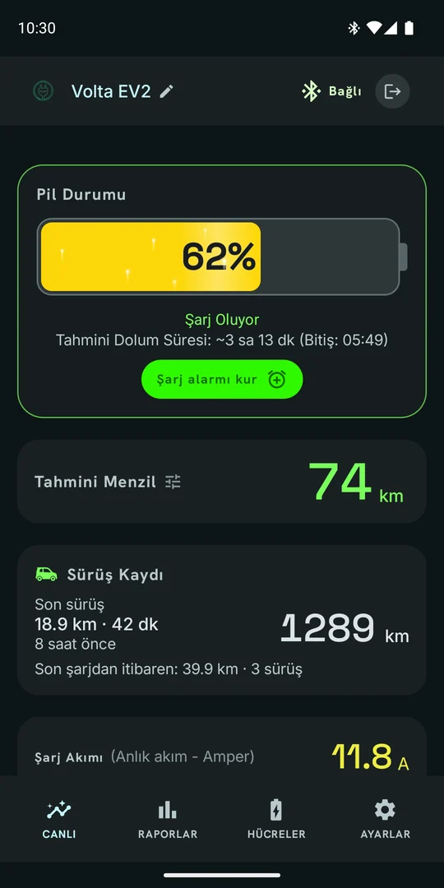
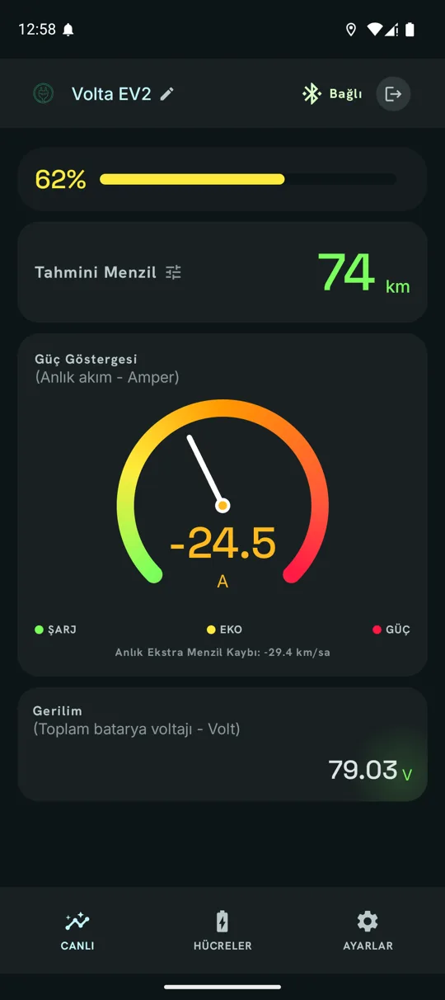
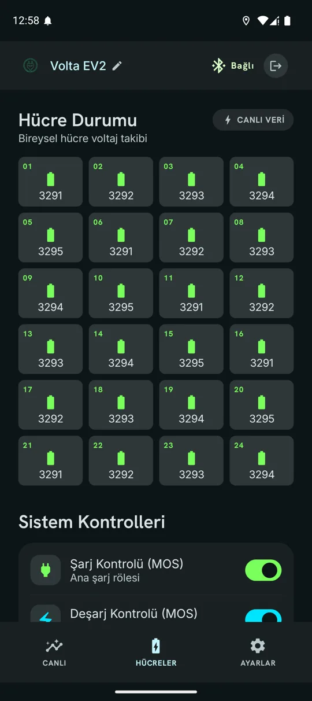
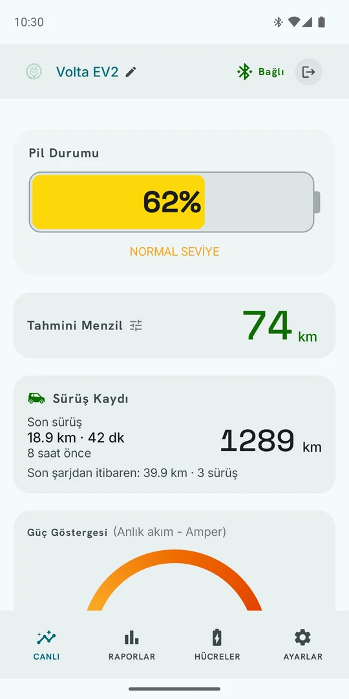

Volta Şarj
Elektrikli aracınızın bataryası, cebinizde.
Volta Şarj, aracınızın batarya yönetim sistemine (BMS) Bluetooth ile bağlanır ve bataryanın o anki durumunu telefonunuza getirir: doluluk, kalan menzil, şarj ne zaman biter, hücreler sağlıklı mı. Kurulum yok, hesap yok; aracın yanına gelip bağlanmanız yeterli.

Şarjda: dolum süresi ve kurulu alarm

Sürüşte: güç göstergesi ve menzil

Hücre hücre gerilimler

Açık ya da koyu tema
Neler yapıyor
Canlı batarya durumu
Doluluk, gerilim, akım ve kapasite anlık olarak. Sürüşte büyük bir güç göstergesi; şarjda dolum bilgisi öne çıkar.
Şarj takibi ve alarm
Şarj ederken %80, %90 ya da %100 için alarm kurun; o seviyeye gelince telefon çalar. Ne zaman biteceği o anki şarj akımına göre hesaplanır, uygulama kapalıyken de çalışır.
Öğrenen menzil tahmini
Sabit bir katsayı yerine sizin sürüşlerinizden öğrenilen tüketime ve batarya sıcaklığına göre. Aracın kilometresini girerek tahmini kendi aracınıza kalibre edebilirsiniz.
Hücre bazında detay
Her hücrenin gerilimi, aralarındaki fark ve bir hücre geride kalırsa uyarı. Şarj ve deşarj rölelerinin durumu.
Sıcaklık ve arızalar
Hücre ve MOS sıcaklıkları; BMS'in bildirdiği arıza durumları önem sırasına göre, kritik olanlar ekranda uyarı olarak.
Rejenerasyon ayrımı
Yokuş inişinde frenle üretilen enerjiyi duvar şarjından ayırt eder; sürerken "şarj oluyor" demez.
Sürüş penceresi (Android)
Navigasyon açıkken bile doluluk, menzil ve akım küçük bir pencerede diğer uygulamaların üstünde kalır.
Bağlantı kopsa da
Araç yanınızda değilken son bilinen durumu, ne zaman görüldüğü bilgisiyle gösterir. Araca yaklaşınca kendiliğinden yeniden bağlanır.
Gizlilik
Uygulama internete bağlanmaz, internet izni bile istemez. Verileriniz telefonunuzdan çıkmaz, kimseyle paylaşılmaz.
İndir
Android
Android 7.0 ve üzeri
Google Play kapalı testine katılUygulama Google Play'de kapalı test aşamasında. Katılmak ve güncellemeleri Play üzerinden almak için naimyag81@gmail.com adresine Google hesabınızın e-postasıyla yazın; listeye eklendikten sonra yukarıdaki bağlantıyla katılabilirsiniz.
Beklemek istemiyorsanız APK'yı doğrudan indirin. Telefonunuz kurulumdan önce bu kaynaktan kuruluma izin isteyecek; güncellerken aynı dosyayı tekrar indirmeniz yeterli, üzerine kurulur.
iPhone
iOS 15.0 ve üzeri
TestFlight'a katılÖnce App Store'dan Apple'ın ücretsiz TestFlight uygulamasını kurun, sonra yukarıdaki bağlantıya dokunun. Uygulama TestFlight üzerinden kurulur; güncellemeler de oradan gelir.
Sürüm notları
- Telefonun konumu kapalıyken araç bulunamıyordu, düzeltildi (Android 12 ve üstü). Konum kapalıysa artık uyarı ve "Konumu Aç" düğmesi gösteriliyor
- Cihaz bulunamazsa 15 saniyelik geri sayım ve kontrol listesi: araç açık mı, telefonla eşleşmiş mi, başka bir telefon bağlı mı
- Uygulama arka plandan dönünce ya da bağlantı denemesi başarısız olunca tarama duruyordu, artık devam ediyor. "Filtresiz ara" seçeneği de çalışmıyordu
- Yeni izin ekranı. Her iznin neden gerektiği ve gizlilik notu: uygulama internete bağlanmaz, verileriniz paylaşılmaz. Sonradan kapatılan izinler açılışta fark ediliyor; Ayarlar'da izin durumu kartı var
- Açık tema. Ayarlar'da Sistem / Açık / Koyu seçimi
- Uzun inişte rejenerasyonun "şarj oluyor" sanılması düzeltildi
- Kurulu şarj alarmı araç prizden çekilse de görünüyor ve iptal edilebiliyor
- Menzil kalibrasyonunda bataryası değiştirilmiş araçlar için uyarı
- Şarj hatırlatıcısı. Şarj ederken hedef doluluğu (%80, %90, %100) seçiyorsunuz; o seviyeye gelince alarm sesiyle haber veriyor. Ne zaman geleceği o anki şarj akımına göre hesaplanıyor ve size gösteriliyor. Uygulama kapalıyken de çalıyor, bildirimi kaydırarak ya da "Sustur" ile susturuyorsunuz
- Büyük yazı tipi kullanan telefonlarda alt menüdeki Ayarlar sekmesine erişilemiyordu
- Üst barda cihaz adı ve bağlantı durumu sıkışıyordu
- Hücreler sayfası uzun listelerde kaydırılamıyordu
- Deşarj kontrolü satırındaki anahtar daralıyor, topuzu yukarı kayıyordu
- Telefon yan çevrildiğinde ekran baştan yükleniyordu
- Kullanılmayan Günlük ve Parametreler sekmeleri kaldırıldı
- Yatay ekran desteği. Telefonu yan çevirdiğinizde tüm ekranlar yatay için düzenleniyor: ana ekranda solda doluluk, kalan menzil ve gerilim, sağda anlık akım göstergesi — kaydırmadan hepsi görünüyor. Tablet ve katlanabilir cihazlar da düzeldi
- Sürüş penceresi (yalnızca Android) — şarj, menzil ve anlık akım diğer uygulamaların üstünde küçük bir pencerede görünüyor, navigasyon kullanırken uygulamaya geçmenize gerek kalmıyor. Sürükleyerek taşınıyor, çift dokunuşla büyüyüp küçülüyor; Ayarlar sekmesinden açılıyor
- Bağlantı artık boşuna açık kalmıyor: uygulamadan çıktığınızda ve veriyi gösteren bir şey kalmadığında kapanıyor
- Bağlantı durumu üst barda, Bluetooth simgesinin yanında yazıyor
- Bağlantı günlüğüne tarama ekranından da girilebiliyor — cihaza bağlanamadığınızda da ulaşıp kopyalayabilirsiniz
- Hücre gerilim uyarıları aracın LFP batarya kimyasına göre yeniden ayarlandı; önceki sürümde sağlıklı hücreler kritik görünebiliyordu
- Menzil tahmini artık yalnızca yeterince uzun ve kesintisiz sürüşlerden öğreniyor; Ayarlar'a girdiğiniz toplam km değeri hesaba katılıyor
- Öğrenilmiş verimlilik Ayarlar'da görünüyor ve istediğinizde sıfırlanabiliyor
- Aşağı çekip yenilerken ekran "Bağlı Değil" yerine "Yenileniyor…" gösteriyor; artık eski değerler görünmüyor
- Uygulama sürümü Ayarlar sekmesinde yazıyor
- İnternet izni tamamen kaldırıldı; uygulama yalnızca Bluetooth ve konum izni istiyor
- Bluetooth kapalıyken uygulamanın kapanması giderildi; artık nedenini açıklayan bir ekran ve tek dokunuşla Bluetooth'u açma seçeneği var
- Araca bağlandıktan sonra veri gelmeye başladığı anda oluşan kapanma giderildi
- Bağlantı, batarya modülünün desteklediği yazma tipine göre kendini ayarlıyor
- Ayarlar sekmesine bağlantı günlüğü eklendi: sorun yaşarsanız kopyalayıp gönderebilirsiniz. Uygulama beklenmedik şekilde kapanırsa, tekrar açtığınızda aynı ekranda hata raporu görünür
- Gereksiz izinler kaldırıldı
Gizlilik
Volta Şarj hiçbir veri toplamaz ve internete hiçbir şey göndermez. Sunucusu yoktur, hesap açmanız gerekmez, analitik ve reklam içermez. Batarya verisi ve sürüş mesafesi yalnızca telefonunuzda kalır.
Ayrıntılar: Gizlilik Politikası
Platformlar
- Android — 7.0 (API 24) ve üzeri
- iOS — 15.0 ve üzeri